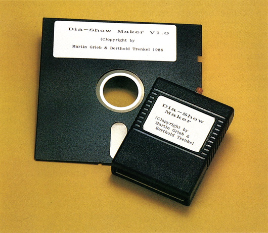
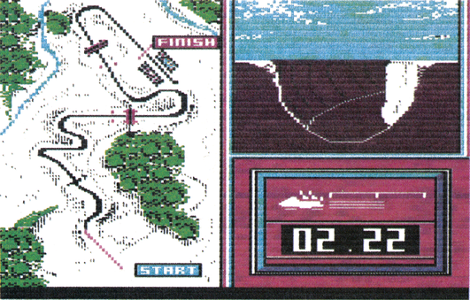
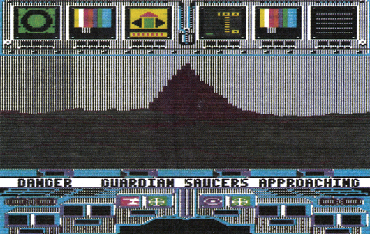

Der Diashow-Maker
Wenn Sie sich schon immer eine eigene Diashow für die tollen Grafiken auf Ihrem C 64 gewünscht haben und zudem noch Hardcopies davon ausdrucken möchten, gibt es jetzt die richtige Lösung für Sie.

Für den Commodore 64 gibt es bekanntlich eine riesige Menge an Spielen und Grafikdemos, die die Grafikfähigkeiten dieses Computers oft bis ins letzte ausnutzen. Oftmals sind diese Grafiken sehr vergänglich, das heißt, sie sind nur für wenige Augenblicke auf dem Bildschirm sichtbar. Oder es gibt zahlreiche gute Demografiken, die man erst umständlich einzeln laden muß, um sie sich anzusehen. Viele dieser Demos sind zudem mit einem nervtötend langen Vorspann versehen. Diese Bilder in eine variable Diashow einzubinden, bei der man sich die Grafik einzeln oder nacheinander anschauen kann, ermöglicht das neue Modul Diashow-Maker von Technicus. Zusätzlich zum Modul wird eine Diskette mit Software ausgeliefert, die eine Hardcopy diverser Grafikformate erlaubt. Diese Trennung von Grafikerfassung und Hardcopy eröffnet nun erstaunliche Möglichkeiten. Mit dem Modul kann man, wie schon von anderen Hardcopy-Modulen her bekannt, den Grafikbildschirm auslesen. Dabei erkennt das Technicus-Modul natürlich automatisch, wo und in welchem Format die Grafik jetzt im Speicher steht. Es erlaubt dann die Speicherung in mehrere andere Formate auf Diskette. Will man nun eine Hardcopy der gespeicherten Grafiken vornehmen, so muß die entsprechende Software von Diskette zugeladen werden. Man hat dabei allerdings umfangreiche Editiermöglichkeiten bezüglich des Ausdrucks.
Außerdem können gespeicherte Grafiken als Bilder für eine Diashow, und das ist der Clou, auch für eigene Basic-Programme verwendet werden.
Das Diashow-Maker-Modul wird in den Expansion-Port des C 64 eingesteckt und Probleme gibt es hier eigentlich nur, falls andere Erweiterungen auch diesen Port benutzen. Solche Erweiterungen muß man dann entfernen. Die Bedienung des Moduls ist denkbar einfach und hat zudem, wie das gesamte System, eine wirklich hervorragende Benutzerfreundlichkeit. Außerdem ist überhaupt das gesamte Paket sehr ausführlich und trotzdem einfach verständlich dokumentiert. Nachdem man ein Spiel mit guter Grafik auf dem Bildschirm hat, kann durch einen Reset am Computer oder mit dem Knopf am Modul das Programm gestoppt werden. Sollte daraufhin die Grafik nicht mehr korrekt sichtbar sein, so muß sie mit der <RETURN>-Taste solange gesucht werden, bis sie wieder richtig auf dem Bildschirm zu sehen ist. Das Modul erkennt dabei automatisch, welches Format vorliegt und zeigt dann ein Menü an, in dem immer nur die Menüpunkte auftauchen, die für die gerade gezeigte Grafik relevant sind. Das heißt, daß zum Beispiel der Menüpunkt »Abspeichern im Koala-Format« nur dann auftaucht, wenn auch tatsächlich ein Multicolor-Bild vorliegt. Grundsätzlich kann das Modul nun die Grafik als Bild für die Diashow, als Display-Programm, als Koala-Bild, oder als Bitmap speichern. Das Modul verwendet zum Speichern der Bilder für eine Diashow ein spezielles Format, in welchen die Grafiken in sehr kompakter Form auf Diskette liegen. Die dafür bestimmten Dateien (Files) müssen sofort beim Speichern mit einer Nummer im Dateinamen versehen werden, damit die daraus entstehende Diashow später genau in der dadurch festgelegten Reihenfolge ablaufen kann. Das Format der Grafikdateien für die Diashow ist auch dasselbe, das man mit der kleinen Zusatzroutine für die eigenen Basic-Programme benutzen kann.
Diashows selbstgemacht
Die Möglichkeit, aus der Grafik ein Display-Programm zu erzeugen, ist ein weiterer Vorteil des Moduls. Dabei kann die Grafik später, wie schon von Paint Magic bekannt, von Diskette als normales Basic-Programm geladen und mit »RUN« gestartet werden. Die anderern beiden Speicherarten ermöglichen noch die Verwendung der Grafik für entsprechende Mal- und Zeichenprogramme. Das Koala-Format ist dabei eines der weiter verbreiteten Formate für Multicolor-Bilder, das sich zudem auch leicht von anderen Programmen konvertieren läßt. Während das Bitmap-Format für die Verwendung mit dem Zeichenprogramm Hi-Eddi bestimmt ist. Mit diesen vielen verschiedenen Speichermöglichkeiten dringt das Modul somit deutlich in die Klasse der besseren seiner Art vor. Außerdem ist es noch möglich die Sprites aus der Grafik zu entfernen oder auch nur die Sprites zu speichern und sogar ein geänderter Zeichensatz kann erfaßt und für eigene Programme verwendet werden. Ergänzend kann man vom Menü aus noch das Dateiverzeichnis (Directory) einsehen oder einen Reset auslösen. Der vom Menü ausgelöste Reset wirkt sogar gegen resetgeschützte Programme. Als Abrundung wurde in das Modul schließlich noch ein Schnellader (Fastloader) integriert, der allerdings erst extra aktiviert werden muß. Dazu ist vom Modulmenü aus lediglich die <SPACE>-Taste zu drücken und der Schnellader wird automatisch installiert. Er lädt daraufhin vom Floppy-Laufwerk mit siebenfacher Geschwindigkeit, wobei der Bildschirm weiterhin angeschaltet bleibt. Die Tatsache, daß man den Floppyspeeder erst ausdrücklich aktivieren muß, ist durchaus ein Vorteil, da bekanntlich nicht alle Programme mit einem solchen Software-Floppyspeeder laufen. Kurzum gesagt, das Modul kann mit seinen Fähigkeiten rundum überzeugen.
Hardcopies als Zugabe
Das Programm für die Diashow befindet sich auf der mitgelieferten Diskette und damit können die dafür bestimmten Grafiken nacheinander oder auch als Einzelbilder angezeigt werden. Die Dateien sind dazu in einem speziellen »gepackten« Format gespeichert, um besonders wenig Diskettenspeicherplatz zu verbrauchen und schnell ladbar zu sein. Das Diashow-Programm ist zwar eine komfortable Methode sich selbst die abgespeicherten Bilder anzuschauen, will man jedoch eine komplette Diashow weitergeben, so bietet sich noch eine andere Möglichkeit an. Es wird zusätzlich eine kleine Basic-Erweiterung mitgeliefert, die man als Maschinenroutine von Basic aus nachladen und aktivieren kann. So können fertige Diashows auf einfachste Weise erstellt werden. Die nötigen Schritte sind in der Anleitung beschrieben und mit einer kleinen Demo fertig auf Diskette dokumentiert.
Ein Hardcopy-Programm ist dazu da, den Bildschirminhalt des Computers auf den Drucker zu übertragen. Dabei stellen sich außer der Kompatibilität zum Drucker noch mehrere Anforderungen. Entweder man druckt die Grafik in Briefmarkengröße als Diskettenverzierung, im 1:1-Format für eine eigene Sammlung oder im A4-Format als Wandschmuck aus. Die Softwarelösung dieses Hardcopy-Problems ist den Technicus-Programmierern erstaunlich gut gelungen. Prinzipiell sind 12672 verschiedene Druckformate beziehungsweise Größen möglich; verständlicherweise nur für Epson-Drucker. Dazu ist ein Parametereditor auf der Diskette enthalten, der Epson- und verschiedene Epson-kompatible Drucker unterstützt und mit dem man sämtliche Druckgrößen einstellen kann. Eine einmal erstellte Parametereinstellung kann auch auf Diskette gespeichert und später wieder verwendet werden, was eine ständige Neueinstellung überflüssig macht. Die eigentliche Hardcopy-Routine wird dann geladen und kann jederzeit mit der <RESTORE>-Taste aktiviert werden. Für den Ausdruck muß nun nur noch eine Grafik auf den Bildschirm gebracht werden. Die einfachste Möglichkeit ist sicherlich, hierzu die vom Modul gespeicherten selbst startbaren Basic-Grafikdateien zu verwenden. Aber die Hardcopy-Routine kann auch völlig unabhängig vom Modul arbeiten, indem man nicht die vorher mit dem Modul abgespeicherten Bilder verwendet. Dazu lädt man die Routine, bevor ein Spiel oder eine Grafik geladen wird, und kann diese jederzeit durch Druck auf die <RESTORE>-Taste aktivieren. Zu diesem Zweck liegt die Hardcopy-Routine auf der Diskette gleich für verschiedene Speicherbereiche vor, damit sie sich mit den nachgeladenen Spielen und Grafiken verträgt.
Starke Farbhardcopies
Falls Sie auch zu denjenigen gehören, die glauben, das bis jetzt gesagte wäre an sich schon genug an Besonderem, so haben Sie sich getäuscht. Als Extra-Bonbon bieten die Hardcopy-Routinen die Möglichkeit, Farbdrucker und sogar 24-Nadeldrucker anzusteuern. Auch die größeren Epson-Drucker der LQ-Reihe können somit richtig ausgenutzt werden. Für die Farb-Hardcopies gelten im Prinzip die gleichen Einstellungen wie für normale Schwarzweiß-Drucker, es muß nur zusätzlich die Farbmischung mit eingestellt werden. Dabei kann jede zu druckende Farbe aus den Grundfarben Rot, Grün und Blau sowie Schwarz einzeln definiert werden. Dies erfolgt in Abstufungen von null bis vier und erlaubt somit umfangreichen Einfuß auf das Aussehen des tatsächlichen Ausdrucks (Bild 1 und 2). Auf diese Art und Weise ist es möglich, die Druckfarben aus einer Farbpalette von insgesamt 525 möglichen Farben beliebig zu mischen.


Wer schon lange darauf gewartet hat, Grafiken in eigene Basic-Programme einzubinden, zum Beispiel um Adventures mit Bildern selber zu erstellen, für den wird das Diashow-Maker-Modul genau das richtige sein. Außerdem kann das gesamte Angebot aufgrund der Ausstattung und der damit verbundenen Möglichkeiten nur die Note sehr gut erhalten. Mit der zusätzlich zum Lieferumfang gehörenden Hardcopy-Software sowie der Basic-Erweiterung ist dem gesamten System bei einem Verkaufspreis von 69 Mark außerdem noch ein hervorragendes Preis-Leistungsverhältnis zu bescheinigen.
(jk)Bezugsquelle: Technicus, Schlesienstraße 10, 7320 Göppingen, Tel. 07161/24365